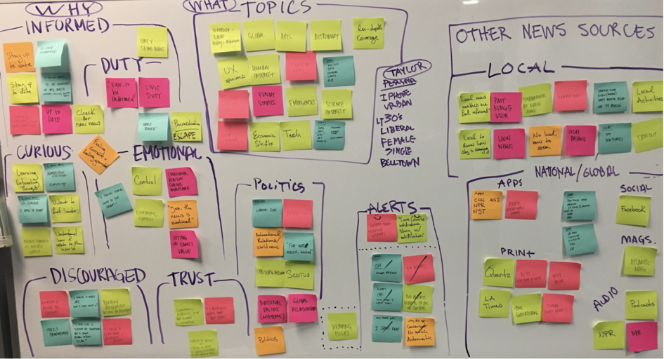

- PROBLEM STATEMENT:
-
Mature customers need a better way to find and purchase books
online because unclear navigation and categorization are both
confusing and frustrating leading to early website abandonment.
- AFFINITY MAPPING:
-
The team took the results from a user survey the research lead
created and compiled the findings onto an affinity map.
-

- SWOT ANALYSIS:
-
The main discovery was that users base the way they consume news
based on how the news source makes them feel. When people lose
trust in one source they find another source that gives them a
sense of control and hope in the system. Users also had a desire
to receive local news and to be informed of events, politics,
and activities happening in their area.
STRENGTHS
- Recognized Local Brand
- Visual Content
- Community Focus
- Live Feed
WEAKNESSES
- Confusing Navigation
- Flawed Heiarchy
- Little Personalization
- Text Heavy
OPPORTUNITIES
- Improve Layout
- Create Intuitive Navigation
- Improve Hierarchy
- Create Sense of Community
THREATS
- Loss of Trust
- Frustrated Users
- Lack of Retention
- DEFINING THE PROBLEM:
-
(Statements created as a team based on above research)
- SOLUTION STATEMENT:
-
By creating a news app with a localized feature that brings both
community and national news together, we can provide a unique,
balanced, and engaging perspective that our users want.
- SO WHAT NOW?
-
Now that the problem and solution were better understood, It was
time to create a design that would improve the user’s need for
community connection and a more seamless navigation.